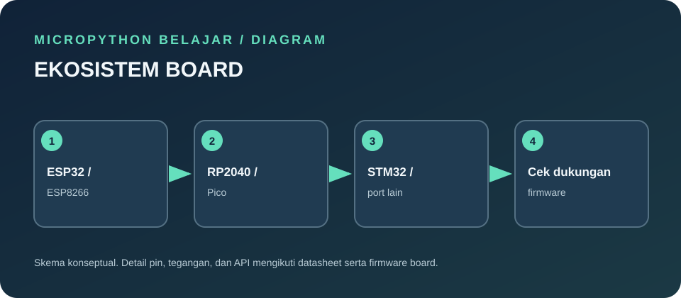

LEVEL PEMULA · ARTIKEL 04
Memilih board MicroPython
Tidak ada board terbaik untuk semua proyek. Pilih berdasarkan dukungan firmware, konektivitas, periferal, memori, konsumsi daya, dan dokumentasi.

Bandingkan berdasarkan kebutuhan
| Platform | Kelebihan umum | Catatan |
|---|---|---|
| ESP32 | Wi-Fi, Bluetooth pada varian tertentu, periferal luas | Varian chip dan pin berbeda |
| ESP8266 | Wi-Fi, ekonomis, banyak contoh | RAM dan periferal lebih terbatas |
| RP2040 / Pico | GPIO, PIO, pembelajaran embedded | Wi-Fi hanya pada board varian tertentu |
| STM32 | Ragam MCU dan periferal | Dukungan bergantung port dan board |
| Arduino modern tertentu | Ekosistem dokumentasi Arduino | Pastikan model tercantum dalam dukungan MicroPython |
Jangan menyamakan merek dengan keluarga chip
Arduino adalah ekosistem dan merek board, bukan satu jenis prosesor. Arduino Nano ESP32 berbeda jauh dari Arduino Uno klasik berbasis ATmega328P. Dokumentasi Arduino mencantumkan board tertentu yang mendukung MicroPython, termasuk Nano ESP32, GIGA R1 WiFi, Portenta dan beberapa board lain.
Rekomendasi menurut tujuan
- Belajar GPIO dan sensor: RP2040/Pico atau ESP32.
- Belajar Wi-Fi dan IoT: ESP32.
- Proyek sederhana dengan perangkat yang sudah dimiliki: ESP8266, bila kebutuhan cocok.
- Eksperimen board Arduino: cek daftar kompatibilitas resmi sebelum membeli.
Periksa pinout dan tegangan logika. Sebagian besar GPIO board modern bekerja pada 3,3 V dan tidak tahan input 5 V secara langsung.
Checklist pemilihan
Pastikan firmware tersedia, kapasitas flash memadai, jumlah GPIO cukup, periferal yang dibutuhkan didukung, konsumsi daya cocok, dan dokumentasi board jelas.